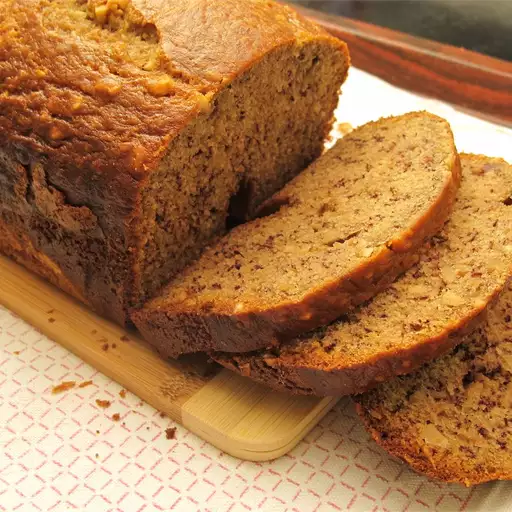

Bread
Home

Description
This homemade bread is soft, fluffy, and perfect for sanwiches or toast. It's simple to make with basic ingredients.
Ingredients
- 2 bananas, peeled and halved lengthwise
-
- 2 cups all-purpose flour
- ¾ cup white sugar
- 2 large eggs
- 3 tablespoons vegetable oil
- 1 teaspoon baking powder
- ½ teaspoon baking soda
Steps
- Place bananas, flour, sugar, eggs, oil, baking powder, and baking soda in the pan of the bread machine.
- Select Dough setting; press Start. Mix dough until well combined and bananas are mashed, 3 to 5 minutes.
Use a rubber spatula to push dough from the sides of the bread pan if necessary.
Press Stop, then smooth out the top of the loaf with a rubber spatula.
- Select Bake setting; press Start. Bake in the bread machine until a toothpick inserted into the center comes out clean, about 50 minutes.
If there is batter on the toothpick, reset the machine on Bake and continue baking for 10 to 15 minutes.
- Remove the pan from the machine.
Allow bread to remain in the pan for 10 minutes before transferring it to a wire rack to cool completely.